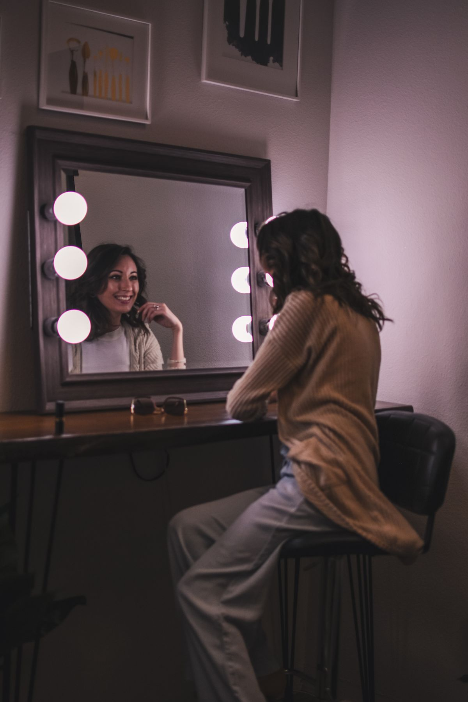

Malam ini Halloween dan kamu belum punya kostum? Tenang. Yang lagi ramai di TikTok dan Instagram adalah tren foto Halloween AI: satu selfie biasa diubah jadi potret film horor tahun 90-an, lengkap dengan sosok bertopeng putih memanjang yang mengintai di latar belakang. Caranya sesederhana mengunggah foto ke Gemini lalu menempel satu prompt, dan per Oktober 2026 trennya masih panas karena bertepatan dengan malam Halloween.
Apa itu tren foto Ghostface?
Ghost Face adalah topeng putih memanjang yang menjadi ikon film horor Scream sejak 1996. Tren ini lahir dari kemampuan edit foto model Nano Banana milik Google yang bisa mempertahankan wajah pengunggah sambil mengubah total suasana di sekelilingnya.
Dua gaya paling banyak beredar: kamar tidur Y2K dengan seprai satin merah muda dan telepon kabel era 90-an ala adegan pembuka Scream, dan lorong kosong remang dengan sosok bertopeng berdiri jauh di belakang. Keduanya punya ciri sama: grain film ala kaset VHS, bayangan pekat, dan pencahayaan sinematik seperti potongan adegan film sungguhan.
Siapkan satu selfie yang tajam
Hasil akhir sangat bergantung pada foto sumber. Pilih satu selfie dengan pencahayaan terang, wajah menghadap kamera dengan jelas, dan tanpa filter tebal. Foto ramai-ramai bikin AI bingung menentukan wajah mana yang dipertahankan, jadi pakai foto yang hanya berisi kamu seorang. Hindari selfie buram atau terlalu gelap karena detail wajah yang hilang di foto sumber tidak bisa dikembalikan oleh AI.
Langkah membuatnya di Gemini
- Buka aplikasi Gemini di HP atau situs Gemini di browser, lalu masuk dengan akun Googlemu.
- Mulai percakapan baru, lalu unggah selfie yang sudah kamu siapkan.
- Salin salah satu prompt siap salin di bawah ini lalu tempel di kolom pesan. Baris "Keep my exact face" di awalnya adalah instruksi yang meminta AI mempertahankan wajahmu.
- Kirim, lalu tunggu proses edit selesai. Biasanya selesai dalam hitungan detik sampai satu menit.
- Periksa hasilnya. Kalau sosok bertopengnya belum muncul atau ada detail janggal seperti jari dan tulisan di poster, kirim prompt yang sama sekali lagi. Membuat dua sampai tiga versi lalu memilih yang terbaik adalah cara yang wajar.
- Unduh foto dengan resolusi tertinggi yang tersedia, lalu unggah ke media sosialmu.
3 prompt siap salin
Prompt kamar tidur Y2K, gaya klasik ala Scream:
Turn my photo into a still from a late-1990s horror movie. Keep my exact face, expression and pose unchanged. Place me in a dim bedroom at night with pink satin bedding, a 90s corded phone beside me, retro posters on the wall. Behind me in the dark doorway stands a tall figure wearing a white elongated ghost mask, slightly out of focus. Heavy VHS film grain, deep shadows, cinematic horror lighting, muted colors, realistic skin texture, make it look like a real paused movie frame.
Varian lorong remang, cocok untuk foto berdiri:
Turn my photo into a cinematic horror movie still. Keep my exact face, expression and pose unchanged. Place me standing in a long, dimly lit empty hallway at night, lit by a single flickering ceiling light. At the far end of the hallway behind me stands a tall figure wearing a white elongated ghost mask, motionless and slightly blurred. Deep shadows, cold blue-grey tones, heavy film grain, tense atmosphere, photorealistic.
Varian meja rias, sosok bertopeng muncul di pantulan cermin:
Turn my photo into a still from a 1990s horror movie. Keep my exact face, expression and pose unchanged. I am sitting at a vintage vanity table with warm mirror bulbs, makeup and an old corded phone on the table. In the mirror reflection behind me, a tall figure wearing a white elongated ghost mask stands in the dark doorway. Warm bulbs contrasted with deep shadows, VHS film grain, cinematic horror mood, photorealistic.
Untuk sampul video TikTok atau Reels, tambahkan frasa "vertical 9:16" di akhir prompt. Kamu juga bisa menggeser posisi sosok bertopeng lewat kalimat lokasinya, atau mengganti Ghostface dengan karakter horor lain seperti Chucky, Michael Myers, Freddy Krueger, atau Pennywise.

Cara lain selain Gemini
Kalau Gemini sedang sibuk, Kapwing menyediakan Ghostface AI Generator yang bisa dicoba gratis: unggah foto, sesuaikan prompt, unduh hasilnya dalam hitungan detik. Alat mereka memakai sistem kredit dan akun gratis sudah cukup untuk mencoba beberapa kali. Kapwing juga punya generator image to video yang bisa menghidupkan foto Ghostfacemu jadi klip pendek siap TikTok.
ChatGPT juga bisa dipakai dengan prompt serupa, karena tren Halloween AI 2026 memang lahir dari dua alat ini: ChatGPT dan Gemini.
Penutup
Itu dia cara ikutan tren foto Halloween Ghostface malam ini. Satu selfie tajam, satu prompt siap salin, dan Gemini mengerjakan sisanya. Selamat mencoba, siapa tahu fotomu jadi yang paling seram di timeline.
Sumber dan Info Resmi
Fakta dan detail di artikel ini merujuk ke sumber berikut, yang sudah diverifikasi isinya:
- AjakTeman: Prompt Foto Halloween Ghostface (17 Oktober 2026): topeng ikon Scream sejak 1996, dua gaya populer (kamar Y2K dan lorong remang), langkah bikin di Gemini, tiga prompt siap salin, dan tips foto satu orang yang tajam.
- Kapwing: Ghostface AI Trend: asal tren dari model Nano Banana milik Google; generator Ghostface Kapwing bisa dicoba gratis dengan sistem kredit; ada fitur image to video.
- AskZyro: Halloween AI Trend: tren Halloween AI 2026 lewat ChatGPT dan Gemini: unggah selfie, tulis prompt, generate, sempurnakan.